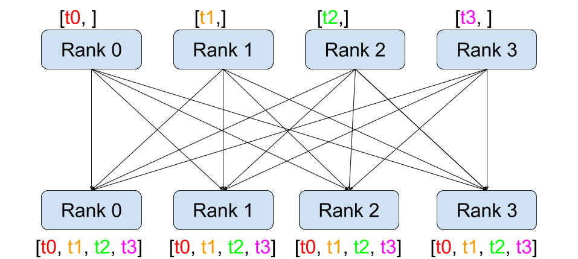
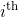

Writing Distributed Applications with PyTorch
译者：@Sylvester
Author: Séb Arnold
In this short tutorial, we will be going over the distributed package of PyTorch. We’ll see how to set up the distributed setting, use the different communication strategies, and go over some the internals of the package.
Setup
The distributed package included in PyTorch (i.e., torch.distributed) enables researchers and practitioners to easily parallelize their computations across processes and clusters of machines. To do so, it leverages the messaging passing semantics allowing each process to communicate data to any of the other processes. As opposed to the multiprocessing (torch.multiprocessing) package, processes can use different communication backends and are not restricted to being executed on the same machine.
In order to get started we need the ability to run multiple processes simultaneously. If you have access to compute cluster you should check with your local sysadmin or use your favorite coordination tool. (e.g., pdsh, clustershell, or others) For the purpose of this tutorial, we will use a single machine and fork multiple processes using the following template.
"""run.py:"""
#!/usr/bin/env python
import os
import torch
import torch.distributed as dist
from torch.multiprocessing import Process
def run(rank, size):
""" Distributed function to be implemented later. """
pass
def init_processes(rank, size, fn, backend='tcp'):
""" Initialize the distributed environment. """
os.environ['MASTER_ADDR'] = '127.0.0.1'
os.environ['MASTER_PORT'] = '29500'
dist.init_process_group(backend, rank=rank, world_size=size)
fn(rank, size)
if __name__ == "__main__":
size = 2
processes = []
for rank in range(size):
p = Process(target=init_processes, args=(rank, size, run))
p.start()
processes.append(p)
for p in processes:
p.join()
The above script spawns two processes who will each setup the distributed environment, initialize the process group (dist.init_process_group), and finally execute the given run function.
Let’s have a look at the init_processes function. It ensures that every process will be able to coordinate through a master, using the same ip address and port. Note that we used the TCP backend, but we could have used MPI](https://en.wikipedia.org/wiki/Message_Passing_Interface) or Gloo instead. (c.f. [Section 5.1) We will go over the magic happening in dist.init_process_group at the end of this tutorial, but it essentially allows processes to communicate with each other by sharing their locations.
Point-to-Point Communication

Send and Recv
A transfer of data from one process to another is called a point-to-point communication. These are achieved through the send and recv functions or their immediate counter-parts, isend and irecv.
"""Blocking point-to-point communication."""
def run(rank, size):
tensor = torch.zeros(1)
if rank == 0:
tensor += 1
# Send the tensor to process 1
dist.send(tensor=tensor, dst=1)
else:
# Receive tensor from process 0
dist.recv(tensor=tensor, src=0)
print('Rank ', rank, ' has data ', tensor[0])
In the above example, both processes start with a zero tensor, then process 0 increments the tensor and sends it to process 1 so that they both end up with 1.0. Notice that process 1 needs to allocate memory in order to store the data it will receive.
Also notice that send/recv are blocking: both processes stop until the communication is completed. On the other hand immediates are non-blocking; the script continues its execution and the methods return a DistributedRequest object upon which we can choose to wait().
"""Non-blocking point-to-point communication."""
def run(rank, size):
tensor = torch.zeros(1)
req = None
if rank == 0:
tensor += 1
# Send the tensor to process 1
req = dist.isend(tensor=tensor, dst=1)
print('Rank 0 started sending')
else:
# Receive tensor from process 0
req = dist.irecv(tensor=tensor, src=0)
print('Rank 1 started receiving')
req.wait()
print('Rank ', rank, ' has data ', tensor[0])
When using immediates we have to be careful about with our usage of the sent and received tensors. Since we do not know when the data will be communicated to the other process, we should not modify the sent tensor nor access the received tensor before req.wait() has completed. In other words,
- writing to
tensorafterdist.isend()will result in undefined behaviour. - reading from
tensorafterdist.irecv()will result in undefined behaviour.
However, after req.wait() has been executed we are guaranteed that the communication took place, and that the value stored in tensor[0] is 1.0.
Point-to-point communication is useful when we want a fine-grained control over the communication of our processes. They can be used to implement fancy algorithms, such as the one used in Baidu’s DeepSpeech](https://github.com/baidu-research/baidu-allreduce) or Facebook’s large-scale experiments.(c.f. [Section 4.1)
Collective Communication
| 
Scatter
| 
Gather
|
| 
Reduce
| 
All-Reduce
|
| 
Broadcast
| 
All-Gather
|
As opposed to point-to-point communcation, collectives allow for communication patterns across all processes in a group. A group is a subset of all our processes. To create a group, we can pass a list of ranks to dist.new_group(group). By default, collectives are executed on the all processes, also known as the world. For example, in order to obtain the sum of all tensors at all processes, we can use the dist.all_reduce(tensor, op, group) collective.
""" All-Reduce example."""
def run(rank, size):
""" Simple point-to-point communication. """
group = dist.new_group([0, 1])
tensor = torch.ones(1)
dist.all_reduce(tensor, op=dist.reduce_op.SUM, group=group)
print('Rank ', rank, ' has data ', tensor[0])
Since we want the sum of all tensors in the group, we use dist.reduce_op.SUM as the reduce operator. Generally speaking, any commutative mathematical operation can be used as an operator. Out-of-the-box, PyTorch comes with 4 such operators, all working at the element-wise level:
dist.reduce_op.SUM,dist.reduce_op.PRODUCT,dist.reduce_op.MAX,dist.reduce_op.MIN.
In addition to dist.all_reduce(tensor, op, group), there are a total of 6 collectives currently implemented in PyTorch.
dist.broadcast(tensor, src, group): Copiestensorfromsrcto all other processes.dist.reduce(tensor, dst, op, group): Appliesopto alltensorand stores the result indst.dist.all_reduce(tensor, op, group): Same as reduce, but the result is stored in all processes.dist.scatter(tensor, src, scatter_list, group): Copies the  tensorscatter_list[i]to the process.dist.gather(tensor, dst, gather_list, group): Copiestensorfrom all processes indst.dist.all_gather(tensor_list, tensor, group): Copiestensorfrom all processes totensor_list, on all processes.
Distributed Training
Note: You can find the example script of this section in this GitHub repository.
Now that we understand how the distributed module works, let us write something useful with it. Our goal will be to replicate the functionality of DistributedDataParallel. Of course, this will be a didactic example and in a real-world situtation you should use the official, well-tested and well-optimized version linked above.
Quite simply we want to implement a distributed version of stochastic gradient descent. Our script will let all processes compute the gradients of their model on their batch of data and then average their gradients. In order to ensure similar convergence results when changing the number of processes, we will first have to partition our dataset. (You could also use tnt.dataset.SplitDataset, instead of the snippet below.)
""" Dataset partitioning helper """
class Partition(object):
def __init__(self, data, index):
self.data = data
self.index = index
def __len__(self):
return len(self.index)
def __getitem__(self, index):
data_idx = self.index[index]
return self.data[data_idx]
class DataPartitioner(object):
def __init__(self, data, sizes=[0.7, 0.2, 0.1], seed=1234):
self.data = data
self.partitions = []
rng = Random()
rng.seed(seed)
data_len = len(data)
indexes = [x for x in range(0, data_len)]
rng.shuffle(indexes)
for frac in sizes:
part_len = int(frac * data_len)
self.partitions.append(indexes[0:part_len])
indexes = indexes[part_len:]
def use(self, partition):
return Partition(self.data, self.partitions[partition])
With the above snippet, we can now simply partition any dataset using the following few lines:
""" Partitioning MNIST """
def partition_dataset():
dataset = datasets.MNIST('./data', train=True, download=True,
transform=transforms.Compose([
transforms.ToTensor(),
transforms.Normalize((0.1307,), (0.3081,))
]))
size = dist.get_world_size()
bsz = 128 / float(size)
partition_sizes = [1.0 / size for _ in range(size)]
partition = DataPartitioner(dataset, partition_sizes)
partition = partition.use(dist.get_rank())
train_set = torch.utils.data.DataLoader(partition,
batch_size=bsz,
shuffle=True)
return train_set, bsz
Assuming we have 2 replicas, then each process will have a train_set of 60000 / 2 = 30000 samples. We also divide the batch size by the number of replicas in order to maintain the overall batch size of 128.
We can now write our usual forward-backward-optimize training code, and add a function call to average the gradients of our models. (The following is largely inspired from the official PyTorch MNIST example.)
""" Distributed Synchronous SGD Example """
def run(rank, size):
torch.manual_seed(1234)
train_set, bsz = partition_dataset()
model = Net()
optimizer = optim.SGD(model.parameters(),
lr=0.01, momentum=0.5)
num_batches = ceil(len(train_set.dataset) / float(bsz))
for epoch in range(10):
epoch_loss = 0.0
for data, target in train_set:
data, target = Variable(data), Variable(target)
optimizer.zero_grad()
output = model(data)
loss = F.nll_loss(output, target)
epoch_loss += loss.data[0]
loss.backward()
average_gradients(model)
optimizer.step()
print('Rank ', dist.get_rank(), ', epoch ',
epoch, ': ', epoch_loss / num_batches)
It remains to implement the average_gradients(model) function, which simply takes in a model and averages its gradients across the whole world.
""" Gradient averaging. """
def average_gradients(model):
size = float(dist.get_world_size())
for param in model.parameters():
dist.all_reduce(param.grad.data, op=dist.reduce_op.SUM)
param.grad.data /= size
Et voilà! We successfully implemented distributed synchronous SGD and could train any model on a large computer cluster.
Note: While the last sentence is technically true, there are a lot more tricks required to implement a production-level implementation of synchronous SGD. Again, use what has been tested and optimized.
Our Own Ring-Allreduce
As an additional challenge, imagine that we wanted to implement DeepSpeech’s efficient ring allreduce. This is fairly easily implemented using point-to-point collectives.
""" Implementation of a ring-reduce with addition. """
def allreduce(send, recv):
rank = dist.get_rank()
size = dist.get_world_size()
send_buff = th.zeros(send.size())
recv_buff = th.zeros(send.size())
accum = th.zeros(send.size())
accum[:] = send[:]
left = ((rank - 1) + size) % size
right = (rank + 1) % size
for i in range(size - 1):
if i % 2 == 0:
# Send send_buff
send_req = dist.isend(send_buff, right)
dist.recv(recv_buff, left)
accum[:] += recv[:]
else:
# Send recv_buff
send_req = dist.isend(recv_buff, right)
dist.recv(send_buff, left)
accum[:] += send[:]
send_req.wait()
recv[:] = accum[:]
In the above script, the allreduce(send, recv) function has a slightly different signature than the ones in PyTorch. It takes a recv tensor and will store the sum of all send tensors in it. As an exercise left to the reader, there is still one difference between our version and the one in DeepSpeech: their implementation divide the gradient tensor into chunks, so as to optimially utilize the communication bandwidth. (Hint: toch.chunk)
Advanced Topics
We are now ready to discover some of the more advanced functionalities of torch.distributed. Since there is a lot to cover, this section is divided into two subsections:
- Communication Backends: where we learn how to use MPI and Gloo for GPU-GPU communication.
- Initialization Methods: where we understand how to best setup the initial coordination phase in
dist.init_process_group().
Communication Backends
One of the most elegant aspects of torch.distributed is its ability to abstract and build on top of different backends. As mentioned before, there are currently three backends implemented in PyTorch: TCP, MPI, and Gloo. They each have different specifications and tradeoffs, depending on the desired use-case. A comparative table of supported functions can be found here.
TCP Backend
So far we have made extensive usage of the TCP backend. It is quite handy as a development platform, as it is guaranteed to work on most machines and operating systems. It also supports all point-to-point and collective functions on CPU. However, there is no support for GPUs and its communication routines are not as optimized as the MPI one.
Gloo Backend
The Gloo backend provides an optimized implementation of collective communication procedures, both for CPUs and GPUs. It particularly shines on GPUs as it can perform communication without transferring data to the CPU’s memory using GPUDirect. It is also capable of using NCCL to perform fast intra-node communication and implements its own algorithms for inter-node routines.
Since version 0.2.0, the Gloo backend is automatically included with the pre-compiled binaries of PyTorch. As you have surely noticed, our distributed SGD example does not work if you put model on the GPU. Let’s fix it by first replacing backend='gloo' in init_processes(rank, size, fn, backend='tcp'). At this point, the script will still run on CPU but uses the Gloo backend behind the scenes. In order to use multiple GPUs, let us also do the following modifications:
init_processes(rank, size, fn, backend='tcp')
init_processes(rank, size, fn, backend='gloo')model = Net() model = Net().cuda(rank)data, target = Variable(data), Variable(target) data, target = Variable(data.cuda(rank)), Variable(target.cuda(rank))
With the above modifications, our model is now training on two GPUs and you can monitor their utilization with watch nvidia-smi.
MPI Backend
The Message Passing Interface (MPI) is a standardized tool from the field of high-performance computing. It allows to do point-to-point and collective communications and was the main inspiration for the API of torch.distributed. Several implementations of MPI exist (e.g. Open-MPI, MVAPICH2, Intel MPI) each optimized for different purposes. The advantage of using the MPI backend lies in MPI’s wide availability - and high-level of optimization - on large computer clusters. Some recent implementations are also able to take advantage of CUDA IPC and GPU Direct technologies in order to avoid memory copies through the CPU.
Unfortunately, PyTorch’s binaries can not include an MPI implementation and we’ll have to recompile it by hand. Fortunately, this process is fairly simple given that upon compilation, PyTorch will look by itself for an available MPI implementation. The following steps install the MPI backend, by installing PyTorch from sources.
- Create and activate your Anaconda environment, install all the pre-requisites following the guide, but do not run
python setup.py installyet. - Choose and install your favorite MPI implementation. Note that enabling CUDA-aware MPI might require some additional steps. In our case, we’ll stick to Open-MPI without GPU support:
conda install -c conda-forge openmpi - Now, go to your cloned PyTorch repo and execute
python setup.py install.
In order to test our newly installed backend, a few modifications are required.
- Replace the content under
if __name__ == '__main__':withinit_processes(0, 0, run, backend='mpi'). - Run
mpirun -n 4 python myscript.py.
The reason for these changes is that MPI needs to create its own environment before spawning the processes. MPI will also spawn its own processes and perform the handshake described in Initialization Methods, making the rankand size arguments of init_process_group superfluous. This is actually quite powerful as you can pass additional arguments to mpirun in order to tailor computational resources for each process. (Things like number of cores per process, hand-assigning machines to specific ranks, and some more) Doing so, you should obtain the same familiar output as with the other communication backends.
Initialization Methods
To finish this tutorial, let’s talk about the very first function we called: dist.init_process_group(backend, init_method). In particular, we will go over the different initialization methods which are responsible for the initial coordination step between each process. Those methods allow you to define how this coordination is done. Depending on your hardware setup, one of these methods should be naturally more suitable than the others. In addition to the following sections, you should also have a look at the official documentation.
Before diving into the initialization methods, let’s have a quick look at what happens behind init_process_group from the C/C++ perspective.
- First, the arguments are parsed and validated.
- The backend is resolved via the
name2channel.at()function. AChannelclass is returned, and will be used to perform the data transmission. - The GIL is dropped, and
THDProcessGroupInit()is called. This instantiates the channel and adds the address of the master node. - The process with rank 0 will execute the
masterprocedure, while all other ranks will beworkers. - The master
- Creates sockets for all workers.
- Waits for all workers to connect.
- Sends them information about the location of the other processes.
- Each worker
- Creates a socket to the master.
- Sends their own location information.
- Receives information about the other workers.
- Opens a socket and handshakes with all other workers.
- The initialization is done, and everyone is connected to everyone.
Environment Variable
We have been using the environment variable initialization method throughout this tutorial. By setting the following four environment variables on all machines, all processes will be able to properly connect to the master, obtain information about the other processes, and finally handshake with them.
MASTER_PORT: A free port on the machine that will host the process with rank 0.MASTER_ADDR: IP address of the machine that will host the process with rank 0.WORLD_SIZE: The total number of processes, so that the master knows how many workers to wait for.RANK: Rank of each process, so they will know whether it is the master of a worker.
Shared File System
The shared filesystem requires all processes to have access to a shared file system, and will coordinate them through a shared file. This means that each process will open the file, write its information, and wait until everybody did so. After what all required information will be readily available to all processes. In order to avoid race conditions, the file system must support locking through fcntl. Note that you can specify ranks manually or let the processes figure it out by themselves. Be defining a unique groupname per job you can use the same file path for multiple jobs and safely avoid collision.
dist.init_process_group(init_method='file:///mnt/nfs/sharedfile', world_size=4,
group_name='mygroup')
TCP Init & Multicast
Initializing via TCP can be achieved in two different ways:
- By providing the IP address of the process with rank 0 and the world size.
- By providing any valid IP multicast address and the world size.
In the first case, all workers will be able to connect to the process with rank 0 and follow the procedure described above.
dist.init_process_group(init_method='tcp://10.1.1.20:23456', rank=args.rank, world_size=4)
In the second case, the multicast address specifies the group of nodes who might potentially be active and the coordination can be handled by allowing each process to have an initial handshake before following the above procedure. In addition TCP multicast initialization also supports a group_name argument (as with the shared file method) allowing multiple jobs to be scheduled on the same cluster.
dist.init_process_group(init_method='tcp://[ff15:1e18:5d4c:4cf0:d02d:b659:53ba:b0a7]:23456',
world_size=4)
I’d like to thank the PyTorch developers for doing such a good job on their implementation, documentation, and tests. When the code was unclear, I could always count on the docs or the tests to find an answer. In particular, I’d like to thank Soumith Chintala, Adam Paszke, and Natalia Gimelshein for providing insightful comments and answering questions on early drafts.